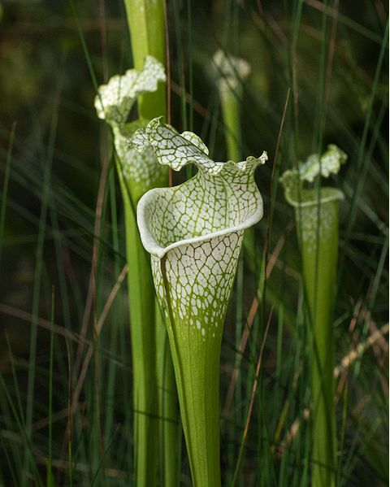

Origens
Critérios de classificação dos animais
A classificação dos animais depende fortemente dos critérios adotados para a mesma. Neste artigo vamos ver como esses critérios mudaram ao longo do tempo.
Ler artigo →
PDF a gerar